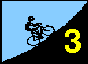
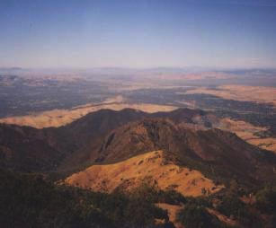
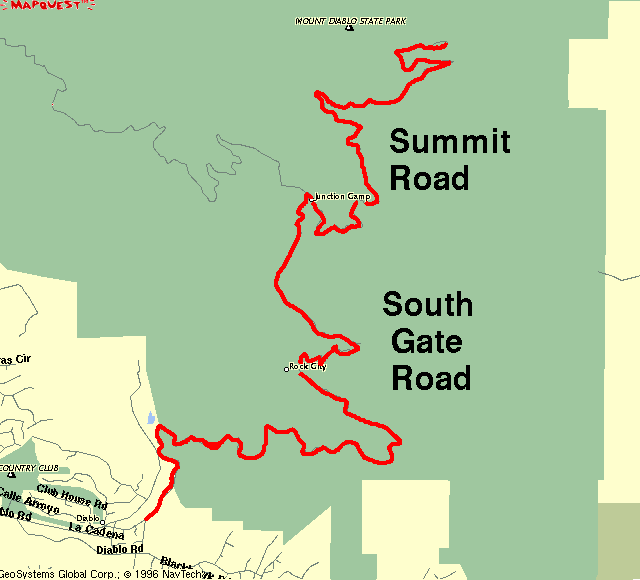

Domination.
Such describes Tracy Colwell's assault on the 1996 Low-Key Hillclimb series. With crisp, clear weather and gusting winds, he rode away from the competition, blitzing Diablo's 3250 vertical feet in close to 50 minutes.
Meanwhile, Liz Beneshin expanded her lead in the series posting the fasted time among the women for the second week. She has a commanding lead in the standings, but there's still 6 climbs left to go...
Special thanks to the following for running the day's event, all Low-KeyTM champions:
In the 1995 series, Phil Duffy rode away from Lance Waltjen and the rest of the Low-Key Hillclimbers to arrive first to the summit of Mount Diablo.
|
In 1996, Ken Hernandez and the Valley Spokesmen once welcome you to this, along with Mount Hamilton, one of the two truly epic climbs in the Bay Area. With 3250 feet of climbing over its 11.1 mile length, Diablo will test your endurance, pacing, and focus beyond the levels demanded by many of the lesser climbs in the region. Unlike Mount Hamilton, there are no intermediate descents here on which to rest. From the start at Athenian School at the base of South Gate Road, the climbing begins immediately. After 6.5 miles of South Gate Road's modest 4.5% average grade, it's time to shift down a few cogs for the turnoff onto 6.9% (avg) Summit Road. And, as you approach the finish, watch out -- this devil has a sting in its tail. Whether you are first to the finish or last, the day will be worthwhile, as all finishers are richly rewarded not only with the satisfaction of having conquored this colossus, but also with what is one of the most panoramic views in the world. |
 |
| Distance: | 11.1 miles |
| Climbing: | 3250 feet |
| Format: | mass start |
| Start: | Athenian School near bottom of South Gate Road. Park on wide section of Diablo Road, not at the school. |
| Finish: | parking lot at the summit. |
| Reg Time: | 10:00 am to 10:20 am |
| Start Time: | 10:30 am |
| Fee: | 3 bucks |
| Weather: | 43F at summit at 11am; 48F at 1:15pm. Gusting winds. Cool climbing; hypothermia deluxe on the way down... |
| Map: |  |
djconnel@flash.net
{kind=link}